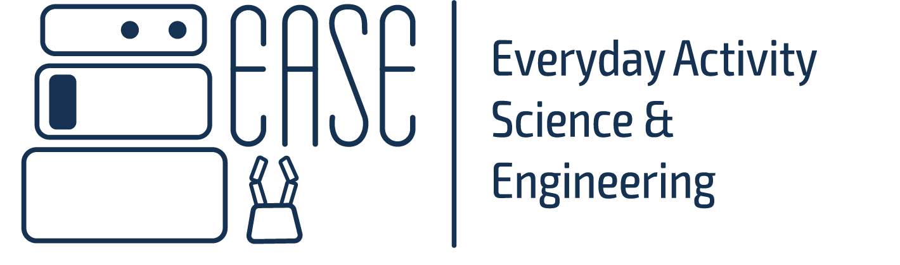

EASE Virtual Research Building
Driving Collaboration, Innovation, and Accessibility in AI and Robotics
Virtual Research Building (VRB) is an innovative digital ecosystem designed to revolutionize the field of AI-powered and cognition-enabled robotics. Our vision is to establish a global leadership position by fostering open collaboration and innovation within this dynamic community. Through integrating artificial intelligence and cognitive technologies with robotics we aim to accelerate technological advancements and share them with the research community. Our mission is to build a vibrant community of researchers, educators, and innovators focused on the entire lifecycle of robotics technologies from conception to application.
Offering digital environments for experimental research and development in robotics.
Providing immersive educational resources for learners at all levels.
Facilitating collaboration with a repository of software and datasets.
Stimulating innovation through competitive challenges and industry benchmarks.
Experiments Conducted
Published Papers
Global Collaborations